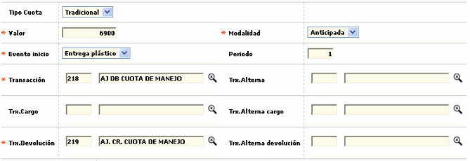

Definición de productos
A través de la funcionalidad de este formulario, la entidad puede definir la combinación de: bines, segmentos y grupos de afinidad que van a conformar los diferentes productos débito a ofrecer a sus clientes.
Al ingresar a la opción, por defecto, se muestran, por bloques, los diferentes productos definidos actualmente, así mismo, se despliega un filtro que permite consultar la información específica para los productos pertenecientes a un bin, segmento o grupo de afinidad en particular.
El formulario, en la parte superior, contiene los enlaces: Líneas de credito, Cuotas y Eventos y a continuación de estos, los enlaces: Actualizar, Eliminar, Adicionar y Detalle.
Adicionar: Al activar ese enlace se despliega un formulario con los siguientes campos.
Descripción de campos
|
Bin |
Campo obligatorio con lista de valores de la cual se selecciona el bin o prefijo con el cual se va a crear el nuevo producto. |
|
Producto |
Este campo obligatorio contiene lista de valores de la cual se selecciona el producto o segmento que va a conformar el nuevo producto. |
|
Grupo de afinidad |
Campo obligatorio con lista de valores de la cual se selecciona el grupo de afinidad que junto con el bin y el segmento van a conformar el nuevo producto. |
|
Descripción |
Este campo alfanumèrico de hasta 30 caracteres, obligatorio, permite registrar el nombre o descripción del nuevo producto a crear. |
|
Marca |
Campo de salida que a partir del bin despliega la marca o franquicia a la cual pertenece el producto a crear. |
|
Código medio de pago |
Este campo de salida muestra el tipo de medio de pago y que para el caso es '2 Tarjeta débito' |
|
Ciclo de facturación |
Campo obligatorio con lista de valores de la cual se selecciona el ciclo de facturación que por defecto van a tener todas las tarjetas asociadas con el nuevo producto. |
|
Subserie número de tarjeta |
En este campo de hasta tres dígitos se registrar un valor fijo que de acuerdo con lo definido por la entidad puede o no hacer parte del número de la tarjeta. |
|
Emite plástico |
Campo de salida que siempre esta en Si para las tarjetas pertenecientes al producto se debe generar un plástico. |
| Modelo plástico |
Campo obligatorio y contiene una lista de valores de la cual se selecciona el modelo de plástico que se va a utilizar durante el proceso de realce de las tarjetas pertenecientes al producto. |
|
Subserie número de tarjeta |
En este campo que se habilita y convierte en obligatorio cuando se ha marcado que el producto si emite plástico, se selecciona de la lista de valores el modelo a utilizar durante el proceso de realce de las tarjetas. |
|
Proveedor |
Campo de salida que despliega el código y nombre del proveedor que suministra el plástico para el realce de las tarjetas. |
|
Programas comercials |
En este campo con lista de valores se puede seleccionar el programa comercial que de acuerdo con sus características se ajuste más al nuevo producto para ofrecer al cliente algunos privilegios adicionales. |
|
Moneda |
Este campo muestra la moneda del producto débito. |
|
Vigencia |
Campo numérico de hasta dos dígitos en el que se registra la cantidad de meses de vigencia que van a tener las tarjetas pertenecientes al nuevo producto. |
|
Periodos antes del vencimiento |
En este campo se registra la cantidad de periodos que el sistema debe evaluar con relación a la fecha actual de vencimiento de la tarjeta para determinar si debe o no hacer renovación automática de la fecha de vencimiento, específicamente cuando se están procesando solicitudes de reposición o reexpedición. |
Si el usuario lo desea y por comodidad también, es posible adicionar inicialmente el producto diligenciando únicamente los campos obligatorios del formulario inicial y posteriormente, una vez que el producto haya sido creado agregar la información de cuotas y eventos mediante la actualización del registro.
Cuotas: si el formulario inicial el usuario invoca el hipervìnculo Cuotas se despliega un formulario que le permite a la entidad definir los parámetros necesarios para el cobro de la cuotas de manejo que se va a cobrar para el nuevo producto. Contiene el hipervínculo Orden aplicación cuota que le permite a la entidad definir la manera como el sistema debe evaluar aquellos parámetros que pueden afectar el monto a cobrar por concepto de la cuota de manejo.
Descripción de campos
|
Tipo cuota |
Campo tipo combo obligatorio, en el cual se puede seleccionar Tradicional para indicarle al sistema que debe cobar el monto definido en el campo Cuota. |
|
Valor |
Este campo obligatorio, de hasta 14 enteros y 2 decimales se registra el valor a cobrar por concepto de cuota de manejo para las tarjetas pertenecientes al nuevo producto. |
|
Modalidad |
Campo obligatorio tipo combo, que le permite a la entidad seleccionar entre anticipada o vencida la manera como será cobrada la cuota para las tarjetas del nuevo producto. |
|
Evento inicio |
En este campo obloigatorio tipo combo que solo contiene la opción Entrega plástico se le indica al sistema el evento que al producirse va a generar el inicio del cobro de la cuota para la tarjeta. |
|
Periodos |
Campo numérico que admite valores entre 1 y 12, en el que se indica la cantidad de periodos que determina la frecuencia con la cual se va a efectuar el cobro de la cuota para las tarjetas pertenecientes al nuevo producto. |
|
Transacción |
En este campo con lista de valores se selecciona la transacción interna con la cual se va a registrar el cobro de la cuota en caso que se cumplan las condiciones para generar dicha cuota. |
|
Transacción alterna |
Campo con lista de valores que permite seleccionar la transacción interna que se va a generar para el cobro de la cuota en caso de presentarse consumos en el exterior. |
|
Transacción cargo |
Si la modalidad se ha definido como Vencida y el producto es cancelado o devuelto por el cliente antes de cumplir los periodos para el cobro de la cuota respectiva, en este campo que contiene lista de valores se selecciona la transacción interna mediante la cual se le va cargar al cliente el valor proporcional de la cuota liquidada desde la fecha del último cobro hasta el momento de la cancelación. |
|
Transacción alterna cargo |
Campo con lista de valores que permite seleccionar la transacción interna que se va a generar para el cobro proporcional de la cuota vencida cuando la tarjeta sea cancelada antes de cumplirse los periodos para el cobro de la cuota y se hayan presentado consumos en el exterior. |
|
Transacción devolución |
Si la modalidad se ha definido como Anticipada y el producto es cancelado o devuelto por el cliente antes de que se causen los periodos cobrados, en este campo obligatorio que contiene lista de valores, se selecciona la transacción interna mediante la cual se le va hacer reintregro o devolución al cliente del valor proporcional de la cuota liquidada desde la fecha de la cancelación hasta el final del periodo ya cobrado. |
|
Transacción alterna devolución |
Campo con lista de valores que permite seleccionar la transacción interna que se va a generar para la devolución proporcional de la cuota anticipada cuando la tarjeta sea cancelada antes de haberse causado los periodos cobrados y se hayan presentado consumos en el exterior. |
Orden aplicación de cuotas: si desde el formulario de cuotas el usuario invoca el hipervìnculo Orden aplicación de cuotas se despliega un formulario que le permite a la entidad determinar el orden o jerarquía que se tendrá en cuenta para la aplicación de algunos descuentos preferenciales y exoneraciones definidos en Promociones para colocación , Categorías de clientes , Programas comerciales , Convenios o Parámetros Interfranquicias y que serán evaluados por el sistema al momento de calcular el valor a cobrar al cliente por concepto de cuota de manejo tomando en cuenta que un mismo cliente y/o producto pueden estar incluidos simultáneamente en varias de las opciones mencionadas y por consiguiente tener derecho a diferentes privilegios, de acuerdo con lo parametrizado en cada una de esas opciones.
Descripción de campos
|
Tipo de cuota |
Campo obligatorio con lista de valores de la cual se selecciona Manejo para indicarle al sistema el tipo de cuota para la que se va a parametrizar el orden de aplicación. |
|
Tipo de orden |
Este campo obligatorio tipo combo permite seleccionar entre El primero o En cascada, la manera como el sistema debe evaluar los diferentes eventos definidos para el cálculo de la cuota. |
|
Primero |
Campo obligatorio con lista de valores de la cual se selecciona entre Interfranquicias, Programa comercial, Programa promoción, Categoría cliente o Convenios el evento que se debe evaluar en primera instancia. |
|
Seguno / Tercero / Cuarto / Quinto / Sexto |
En estos campos tipo combo no obligatorios y que se habilitan únicamente cuando el tipo orden sea En cascada, se selecciona entre Interfranquicias, Programa comercial, Programa promoción, Categoría cliente o Convenios el orden en el que se debe evaluar cada uno de los eventos seleccionados para efectos de calcular la cuota respectiva. |
Eventos: si desde el formulario inicial el usuario invoca el hipervìnculo Eventos se despliega un formulario que le permite a la entidad definir los parámetros necesarios para los diferentes eventos o tipos de solicitud que eventualmente es posible gestionar para el nuevo producto.
El formulario se encuentra estructurado en 3 bloques de datos: Reposición, Reexpedición y Renovación con los siguientes campos.
Descripción de campos
|
Reposición primera vez / Segunda vez / Tercera vez / Mayor a tres veces |
En estos campos numéricos de 14 enteros y 2 decimales, se registran respectivamente los montos que la entidad cobrará al cliente cada vez que se haga una reposición de la tarjeta, acorde con la frecuencia o cantidad de veces que este evento se haya presentado. |
|
Transacción asociada |
Si cualquiera de los campos anteriores contiene un valor, este campo se convierte en obligatorio y en él se selecciona de la lista de valores la transacción interna que se va a generar cuando se cumplan las condiciones para generar cobro por el evento. |
|
Cambio de nombre / Banda magnética / Deterioro |
En estos campos tipo check se marcan aquellas causales por los cuales la entidad va a generar cobro al cliente en caso de presentarse el evento de reposición del plástico. |
|
Calcula fecha de vencimiento |
Campo tipo check en el que se indica al sistema si dentro del proceso de resposición se debe calcular una nueva fecha de vencimiento para la tarjeta. |
|
Genera número de tarjeta |
En este campo se señala si como resultado del evento de reposición se debe generar un nuevo número de tarjeta. |
|
Reposición activa |
Campo tipo check en el que se indica si como resultado de la reposición del plástico este sale sin ningún bloqueo y listo para su uso o si por el contrario debe salir con bloqueo al despacho y esperar el proceso normal establecido por la entidad para el desbloqueo de la tarjeta. |
|
Reexpedición Primera vez / Segunda vez / Tercera vez / Mayor a tres veces |
En estos campos numéricos de 14 enteros y 2 decimales, se registran respectivamente los montos que la entidad cobrará al cliente cada vez que se haga una reexpedición de la tarjeta, acorde con la frecuencia o cantidad de veces que este evento se haya presentado. |
|
Transacción asociada |
Si cualquiera de los campos anteriores contiene un valor, este campo se convierte en obligatorio y en él se selecciona de la lista de valores la transacción interna que se va a generar cuando se cumplan las condiciones para generar cobro por el evento de reexpedición. |
|
Calcula fecha de vencimiento |
Campo tipo check en el que se indica al sistema si dentro del proceso de reexpedición se debe calcular una nueva fecha de vencimiento para la tarjeta. |
|
Porcentaje cuota |
Campo numérico en el que se indica el porcentaje que aplicado sobre el concepto seleccionado en el campo 'Base' servirá al sistema para calcular el valor de la cuota a cobrar. Este campo es excluyente con el de 'Cuota' es decir que solo uno de los dos debe ser diligenciado. |
|
Renovación Primera vez / Segunda vez / Tercera vez / Mayor a tres veces |
En estos campos numéricos de 14 enteros y 2 decimales, se registran respectivamente los montos que la entidad cobrará al cliente cada vez que se haga una renovación de la tarjeta, acorde con la frecuencia o cantidad de veces que este evento se haya presentado. |
|
Transacción asociada |
Si cualquiera de los campos anteriores contiene un valor, este campo se convierte en obligatorio y en él se selecciona de la lista de valores la transacción interna que se va a generar cuando se cumplan las condiciones para generar cobro por el evento de renovación. |
|
Genera número de tarjeta |
En este campo se señala si como resultado del evento de renovación se debe generar un nuevo número de tarjeta. |
|
Reposición activa |
Campo tipo check en el que se indica si como resultado de la renovación de la tarjeta esta sale sin ningún bloqueo y lista para su uso o si por el contrario debe salir con bloqueo al despacho y esperar el proceso normal establecido por la entidad para el desbloqueo de la misma. |
|
Permite renovación masiva |
En este campo tipo check se señala si las tarjetas pertenecientes al producto pueden ser incluidas dentro de los procesos de renovación masiva que eventualmente adelanta la entidad. |
Copiar productos : si desde el formulario inicial el usuario invoca el hipervínculo Copiar productos, se despliega un formulario que le permite a la entidad copiar y replicar todos los parámetros de un producto ya existente a un nuevo producto, agilizando así el proceso de creación de nuevos productos.
Después que el produto ha sido copiado, el usuario puede modificar los datos y parámetros que sea necesario de acuerdo con las características del nuevo producto.
Descripción de campos
|
Producto origen |
Campo de salida en el cual se muestra el bin, producto, grupo de afinidad y descripción del producto origen que se quiere copiar. |
|
Producto |
Este campo obligatorio con lista de valores permite seleccionar la combinatoria de bin, segmento y grupo de afinidad correspondientes al nuevo producto al que se desea replicar la parametrización del producto origen. |
Actualizar: si el usuario selecciona un registro e invoca la opción Actualizar, se despliega un formulario en el cual los únicos campos NO modificables son el Bin, Producto, Grupo de afinidad, Marca, Emite plástico, Código medio pago y Moneda.
Este formulario, igual que sucede con el de adicionar, contiene los hipervinculos Cuotas y Eventos con los cuales se invocan los formularios que permiten actualizar cualquiera de los datos contenidos en estos formulario y cuya descripción se señalá anteriormente.
Actualizar cuotas

Actualizar orden aplicación cuota
Actualizar eventos
Detalle: si el usuario selecciona un registro e invoca la opción Detalle, se despliega un formulario en el cual ninguno de sus campos es modificable.